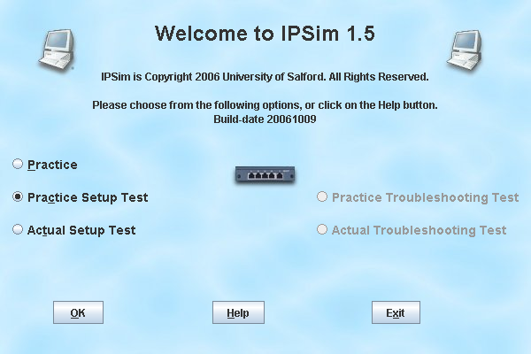

You can prepare for the assessment by taking practice tests. These are not recorded on University servers, you can do them as many times as you like.
From working with IPSim at the same time as writing it, I have found that the more I practice, the easier it becomes, and the more consistency I use in numbering IP addresses, the easier it is, as in a real network.
If you start IPSim, or go to File->New, you can select Practice Test from the radio buttons.

IPSim will then prompt you to choose a difficulty level.
The difficulty of the real assessment will be roughly equivalent to a HARD practice test.
The details of the randomly generated problem will now appear in the status bar at the bottom of the screen.
Now you set about solving the problem. In addition to the usual connectivity test you can use the Check Solution button on the toolbar, which will tell you how well connected the network is, and how well it conforms to our specifications, with feedback available as to what is currently wrong with the network.
When you have 100% for your overall score, you can try another problem, perhaps Medium or even Hard.
If you are daunted by a Hard problem, remember that you can do the binary arithmetic on paper or using Windows Calculator in Scientific mode. Just as a real system administrator would make notes, so can you.
Again, IPSim does provide a limited notemaking facility, which is in the Tools menu, and be warned, again, that this scrapbook does not save the data to file when you save or upload your network.
When you are confident with all three difficulty levels, you are ready to take the assessment. Be sure to keep practicing, in case you forget some details, and read the section in the online documentation about taking the real assessment, so that you are not surprised by any details when you take it.